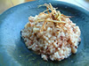
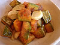

| 写真 | 名前 | メインの素材 | コメント |
|---|---|---|---|
|  | タコのチャイナリゾット | お米 | 煮込んでゆくと味が濃縮されますので、ちょっと薄めのスープがいいですね。最後のバターとトッピングの白髪ねぎで、画竜点睛です。必ず、用意してください！ |
|
豚マヨキムチで石焼ビビンバプ | アッツアツの石の器で具を混ぜ混ぜしてると、マヨネーズがブジブジ、ジビジビ音を立てて焦げてゆきます。たまりません！豚キムチとマヨネーズと石焼ビビンバプが大好きならば、試してみてくださいね。 | |
|  | 昆布茶なかぼちゃのほくほくサラダ | カボチャ | 素揚げしたかぼちゃに昆布茶のドレッシングをからめてアツアツをホクホクしながら食べちゃうサラダです。 |